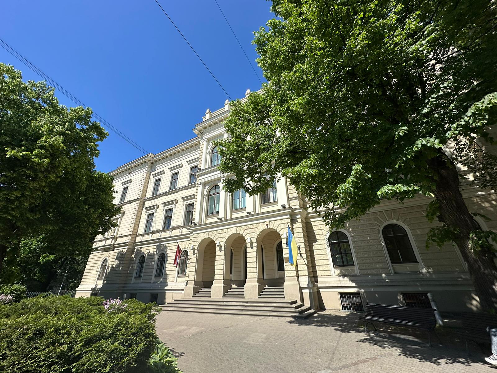

Foto: Reinis Odītis, Rīgas Valsts 2. ģimnāzija 2
Ar domu par nākotni
Lai gan mācības mūzikas pamatskolā noteikti bija īpaša pieredze, jau sestajā klasē pamanīju, ka viss, atskaitot mūziku, padodas pārāk viegli.
Nācās veikt svarīgu izvēli - pamest silto vietu. Pēc vairākiem iestāšanās eksāmeniem, uzsāku mācības Rīgas Valsts 2. ģimnāzijā, kur pavadīju nākamos sešus savas dzīves gadus.
Mācības ģimnāzija bija izaicinājumiem pilnas, taču bez šīs pieredzes visdrīzāk nebūtu pieņēmis lēmumus, kuri noveda mani pie mācībām Latvijas Universitātes Datorikas fakultātē.